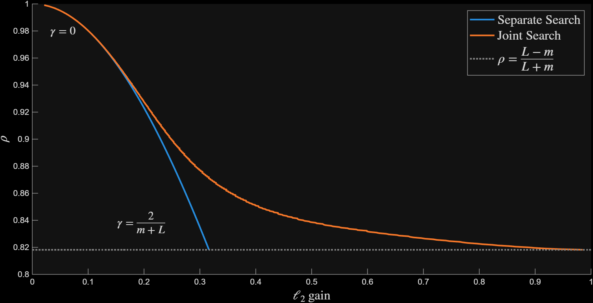
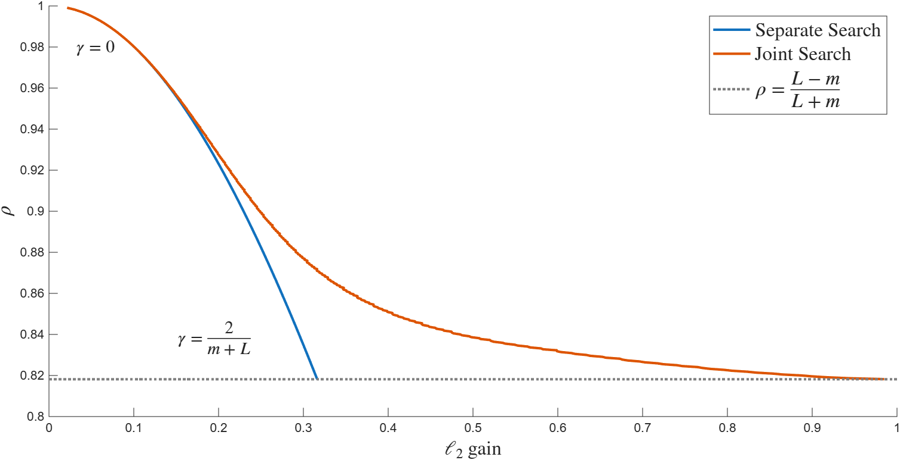

Stochastic Gradient Noise#
This example performs Analysis of the Projected Gradient Descent (PGD) algorithm to solve the composite optimization problem \(\min f(\beta) + g(\beta)\). The gradients of the function \(f \in S_{m, L}\) are corrupted by additive stochastic noise. The p.c.c. function \(g\) is unaffected by noise. The additive noise \(w_{p, k}\) is i.i.d. normally distributed at each time, with matrix covariance \(\Omega\). The performance output is the error \(z_{p, k} := z^2_k - \beta^*\). The resulting
The representation of the noise-corrupted PGD algorithm used for Stochastic analysis is
This representation ensures that the performance input \(w\) never enters an oracle evaluation \(\partial g\) or \(\nabla f\).
Analysis is performed with paramters \(m = 1, L = 10, \Omega = I\). The stepsize parameter \(\gamma\) is swept in the range \([0, \frac{2}{L+m}\). The Stochastic Sensitivity and convergence rate are computed for each \(\gamma\) using an Analysis program with orders [1, 1] at each oracle. Figure 1 plots the results of two executions of Analysis. The Separate Search poses and solves two separate Analysis. The Joint Search solves a single multi-criteria Analysis program. The conservatism of the joint approach is illustrated by the difference between the curves.

Figure 1 Convergence rate v.s. sensitivity#

Figure 1: Convergence rate v.s. sensitivity#
1%define the operators
2m = 1;L = 10;
3op1= op_pcc(); %pcc goes first, to not take information from the noisy gradient
4op2= op_sml(m, L);
5ops = {op1, op2};
6
7%define the PGD
8gamma = 2/(L + m);
9K = ss(1, [-gamma, -gamma], [1; 1], [-gamma, 0; -gamma, 0],1);
10
11%gain from (error in w2) to (z2 - z*)
12network = bridge_pass_through(2); %start with no network dynamics
13[network, iwp] = network.add_oracle_input(2, []); %add wp
14[network, izp] = network.perf_output_z(2); %add zp
15
16%define specification
17GAIN = 10;
18spec_stoch = spec_h2(GAIN, 1, iwp, izp);
19spec_stoch.target = true;
20
21
22%form the systems
23sys_clean = opt_system(ops, [], K); %for convergence rate
24sys_noisy = opt_system(ops, network, K); %for stochastic sensitivity
25
26%pose the analysis problem
27order = {1, 1};
28
29%only convergence
30man_noisy= opt_analysis(sys_noisy);
31sol_noisy = man_noisy.solve_single(order, spec_stoch);
32
33%only sensitivity
34man_clean = opt_analysis(sys_clean);
35sol_clean = man_clean.bisect(order);
36
37%both at once: minimize rho with inner objective h2 gain
38specs_joint = {spec_stability(1), spec_stoch};
39man_joint = opt_analysis(sys_noisy);
40sol_joint = man_joint.bisect(order, specs_joint);
41
42
43h2gain = sqrt(sol_noisy.objective); % 0.3162
44rho = sol_clean.rho; % 0.8182
45
46h2gain_joint = sqrt(sol_joint.objective); % 1.0389
47rho_joint = sol_joint.rho; % 0.8182